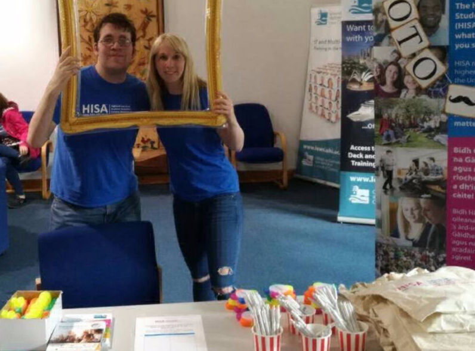
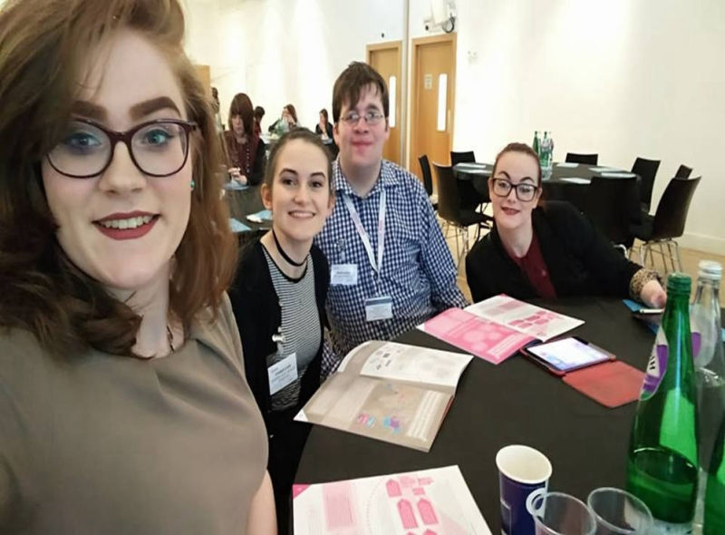
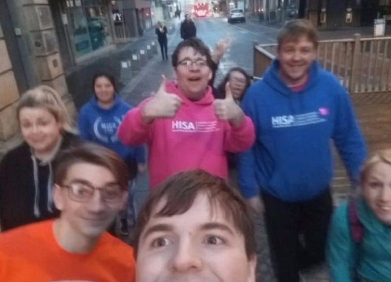
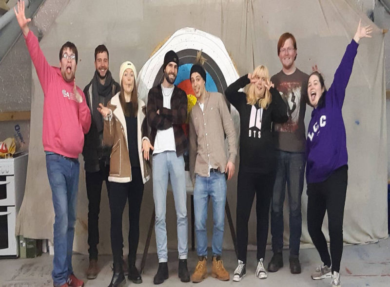
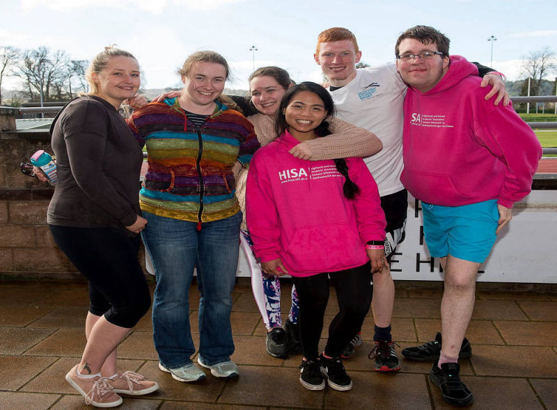
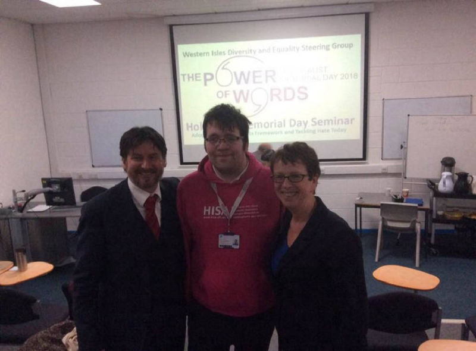

Joshua Smith and Emma Robson at HISA Freshers 2017
Team HISA at SPARQS Conference and Awards 2017
Team HISA at Executive Training 2017
Team HISA at Regional Council 2019
Team HISA at NUS Scotland Conference 2018
Lews Castle College Adventure Club event - Archery
Team LCC & HTC at HISA Sports Day 2018
Joshua Smith at Holocaust Memorial Day Seminar